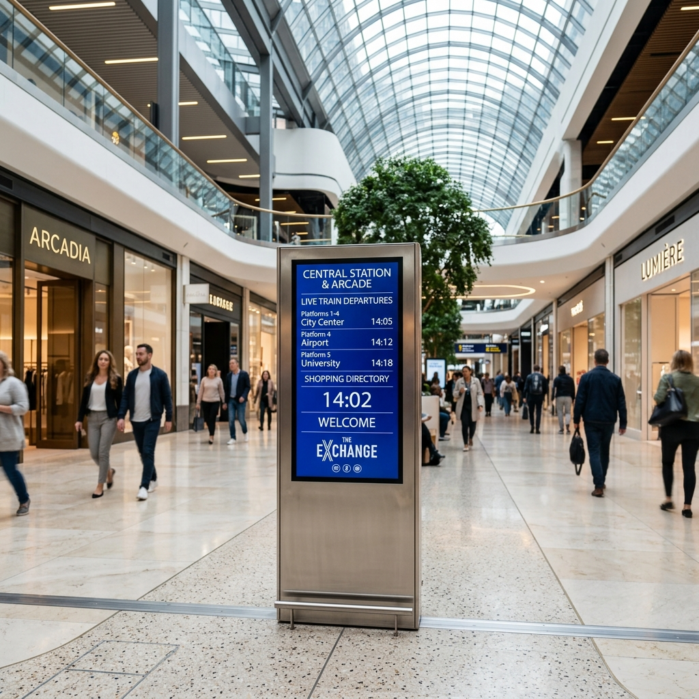

Digital signage advertising platform
Turn premium screens into a live brand experience.
Signtral helps brands launch, update, and manage digital signage campaigns across retail, hospitality, fitness, and high-footfall spaces with cleaner execution and better visibility.

Why Signtral
A digital signage platform built around advertiser outcomes
Signtral is designed for brands that want a cleaner way to appear in physical spaces. It combines campaign planning, screen management support, and playback visibility in one structured platform.
High-footfall relevance
Place campaigns in retail, hospitality, wellness, and service environments where attention already exists.
Digital flexibility
Refresh messaging faster when offers change, inventory moves, or local campaigns need a quick update.
Cleaner operations
Reduce fragmented coordination by working through one platform instead of disconnected manual processes.
Advertiser benefits
Why brands choose digital signage with Signtral
The strongest value for advertisers comes from flexibility, operational speed, and visibility into how campaigns are delivered across real-world locations.
Instant content updates
Update offers, creatives, product launches, and local messaging without waiting on slower offline replacement cycles.
Affordable presence in busy spaces
Build premium visibility in high-footfall environments with a more flexible cost structure than many traditional formats.
Playback visibility
Gain clearer confirmation that scheduled content was shown on intended screens during intended time windows.
Contextual placement
Show campaigns in relevant physical environments such as stores, waiting areas, gyms, cafes, and commercial venues.
Faster campaign execution
Launch and adjust campaigns through one system instead of relying on scattered coordination across locations.
Future ROI reporting
Signtral is being built with future measurement and ROI visibility in mind so advertisers can evaluate outcomes more clearly over time.
Traditional vs Signtral
A cleaner alternative to slower offline advertising workflows
Signtral does not replace every format, but it does solve several everyday friction points that advertisers face with manual, static, or fragmented screen operations.
Traditional methods
- Creative changes can take longer to implement
- Visibility into actual delivery may be limited
- Local execution often depends on manual coordination
- Campaign optimisation can be slower after launch
With Signtral
- Digital creative can be updated faster
- Playback visibility supports stronger delivery confidence
- Location planning and screen access become more structured
- Advertisers get a cleaner base for future reporting
How it works
From creative brief to live screen delivery
Keep the workflow simple so advertisers can move from planning to launch with less friction.
Choose target locations
Select relevant screens and environments based on audience fit, venue type, and campaign goals.
Upload creative and schedules
Prepare campaign content, define time windows, and plan when each message should appear.
Launch across partner screens
Run campaigns through a structured network instead of relying on disconnected manual workflows.
Review playback visibility
Track delivery signals and maintain a clearer view of scheduled playback activity.
For advertisers
Built for brands that want stronger real-world visibility
Signtral is most valuable for advertisers who want more control over creative updates, more relevant placement in physical spaces, and cleaner execution across multiple locations.
- Reach customers closer to the point of decision
- Plan campaigns across selected screens and venues
- Refresh messaging quickly when priorities change
- Gain a better view of campaign delivery activity
Retail and in-store visibility
Show campaigns where customers are already browsing, waiting, comparing, or making purchase decisions.
Local campaign flexibility
Adjust offers, launches, and messaging across specific locations without rebuilding the whole campaign.
Operational simplicity
Work through one clean platform instead of chasing updates across separate vendors, locations, and teams.
Best-fit environments
Use digital signage where physical visibility already matters
Start in environments where customers are already present, attentive, and likely to act.
Retail stores
Malls and food courts
Cafes and restaurants
Gyms and fitness centres
Clinics and waiting areas
Salons and service outlets
Co-working spaces
Commercial venues
New revenue potential
Monetise existing screens without losing control over your own in-location messaging.
Centralised updates
Keep content consistent across locations without depending on local manual changes.
Partner-ready operations
Join a structured screen network that is easier for advertisers to understand and use.
For partners
Location owners can turn screens into a stronger business asset
Signtral is advertiser-led, but it also helps location owners manage screens cleanly and create a path to new revenue through premium advertising placements.
- Manage screens remotely across one or many locations
- Balance your own content with advertiser inventory
- Maintain a polished customer-facing experience
- Expand your screen network over time
Platform capabilities
Core tools for screen management and advertiser delivery
Everything on the homepage is framed around the real capabilities needed to launch and operate cleanly.
Screen and location management
Organise screens, venues, and ownership clearly inside one operating layer.
Scheduling and playlist control
Control what appears, where it appears, and when it goes live across the screen network.
Advertiser campaign planning
Match creative and schedules to selected locations and planned time windows.
Playback visibility
Review delivery activity through a cleaner operational view.
Partner controls
Support partner onboarding, screen assignment, and location-level operations from one place.
Future measurement foundation
Build from a structured base today and expand into richer reporting and ROI visibility over time.
Portal access
Already working with Signtral?
Open the right workspace directly from here.
Advertiser
Review campaign activity, schedules, and delivery visibility.
Open advertiser portalPartner
Manage screens, locations, and content operations.
Open partner dashboardFAQ
Common questions from advertisers
These answers help new visitors understand what Signtral is, how it works, and why it is useful.
What is Signtral?
Signtral is a digital signage advertising platform that helps brands manage campaigns, update creative quickly, and maintain playback visibility across partner screens.
Who is Signtral built for?
Signtral is built primarily for advertisers and brands, while also supporting location owners who want to manage screens and participate in a partner network.
Can advertisers update campaign content after launch?
Yes. Signtral is designed to support faster digital creative updates than many traditional offline advertising formats.
Does Signtral support playback visibility?
Yes. Signtral is designed to give advertisers clearer playback visibility so teams can understand whether scheduled content was shown in intended screens and time windows.
Can location owners partner with Signtral?
Yes. Location owners can partner with Signtral to manage screens professionally and unlock additional value from existing screen infrastructure.
Contact
Talk to us about digital signage advertising
Tell us about your campaign goals, target locations, or brand requirements. If you are a location owner, you can also use the same form to start a partner conversation.
- For advertisers exploring high-footfall digital signage
- For brands planning location-based screen campaigns
- For location owners who want to join the network